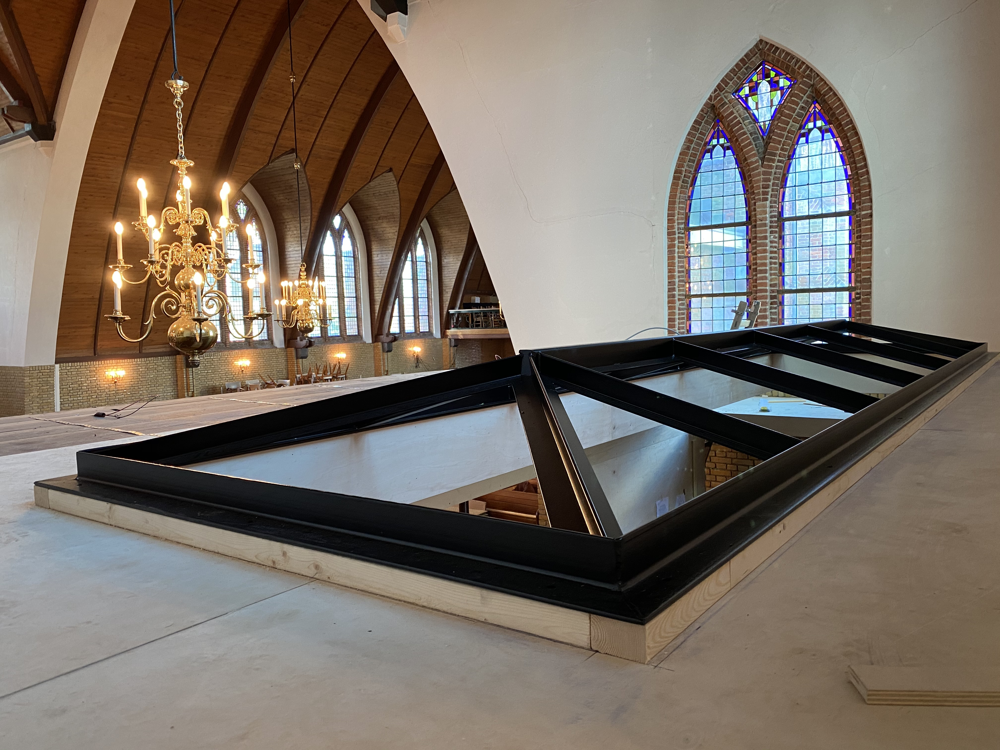
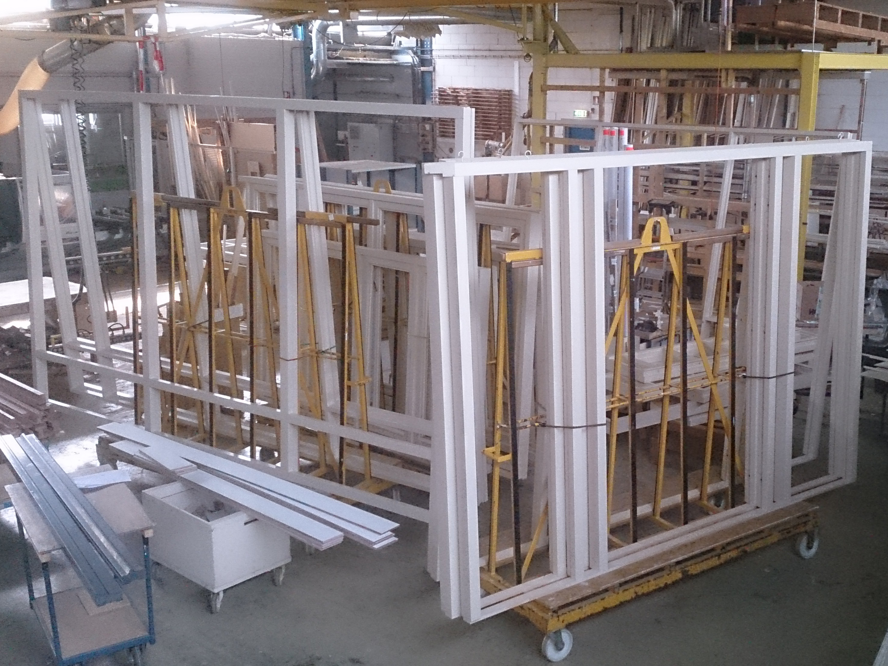
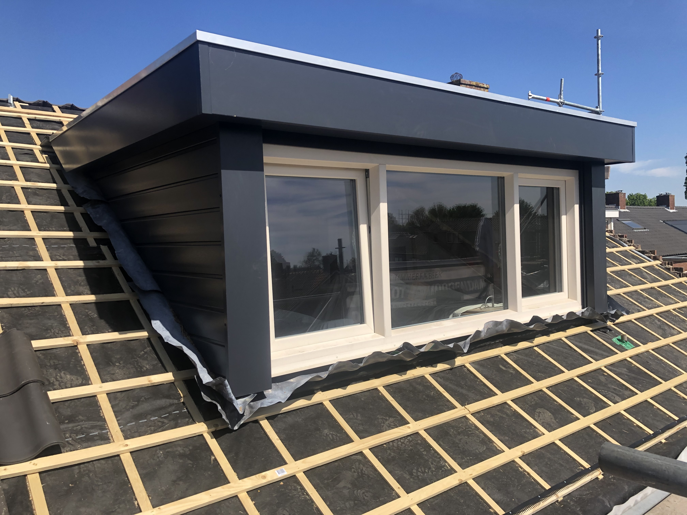
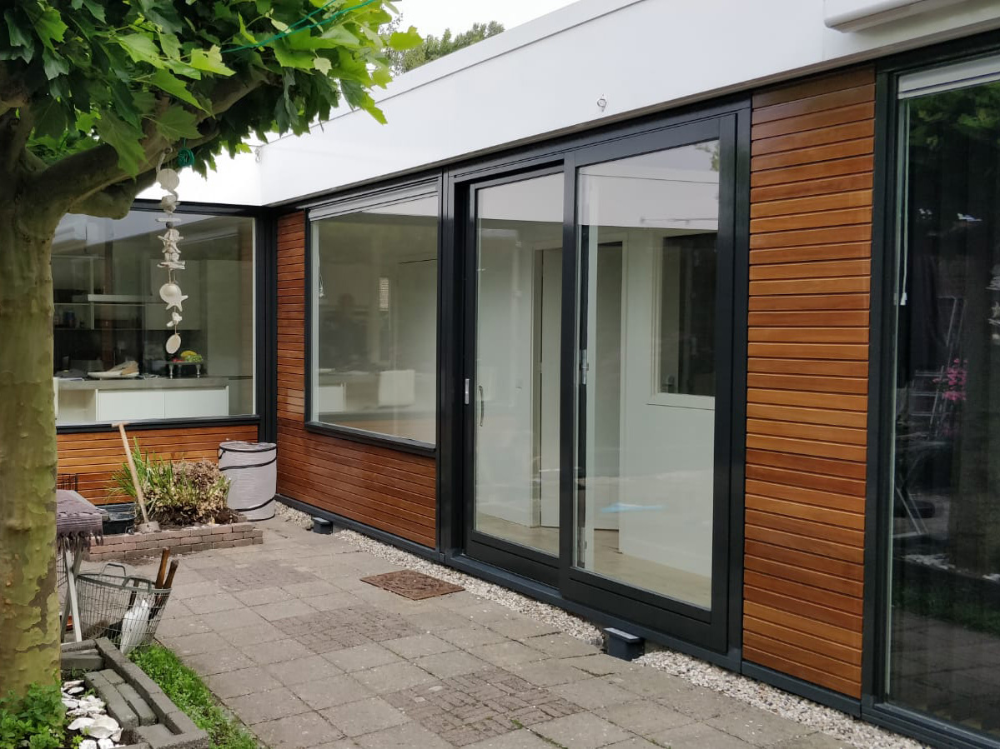

Timmerfabriek
Wij zijn een timmerfabriek die houten producten levert van één enkel exemplaar tot grote aantallen. Of u nu een enkel raam of kozijn nodig hebt, of meerdere producten voor een woning, project of een hele straat, wij zijn u graag van dienst. Wij leveren maatwerk voor renovatie, nieuwbouw, restauratie en onderhoud, voor bedrijven en particulieren, waarbij u kunt denken aan de volgende producten.
Omschrijvig timmerfabriek

Kwaliteit
Kwaliteiten en duurzaamheid staan bij ons voorop!
In de fabriek verwerkt ons gemotiveerde team het ruwe materiaal tot allerlei houtproducten. Vaklui met gevoel voor hout. Wij kunnen het voor u plaatsen maar alleen vervaardigen kan ook, zodat u het montage werk zelf kunt uitvoeren.

Productie
Zij maken daarbij gebruik van geavanceerde houtbewerking machines. Daarnaast beschikken zij over het vaardigheid om handmatig houten elementen te maken. Dat vinden wij een mooie combinatie: moderne houtbewerking machines en ambachtelijke handvaardigheid. Samen met onze aandacht voor de klant staat dat garant voor kwaliteit.

Duurzaamheid
Zorgvuldige afwerking van houtproducten is van groot belang. Het bepaalt het beeld en de duurzaamheid van de product. Daarom gebruiken wij alleen hoogwaardige, veilige materialen en middelen om een hoogwaardig totaal product te kunnen leveren met een lange levensduur. Zo gebruiken wij in onze spuitcabine water gedragen, milieu vriendelijke lakken. Dat draagt bij aan het milieu en staat garant voor duurzaamheid.

Onze belofte
Onze houtproducten worden alleen afgewerkt met beslag, hang- en sluitwerk met het politiekeurmerk Veilig Wonen. Ramen, deuren en kozijnen kunnen worden voorzien van alle soorten beglazing. Het glas word zorgvuldig gekit en verder afgewerkt.
Wij staan voor kwaliteit en duurzaamheid. Zorg voor het milieu en aandacht voor veiligheid bepaalt in hoge mate onze bedrijfsvoering.